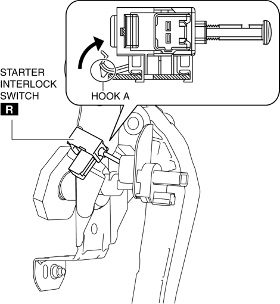
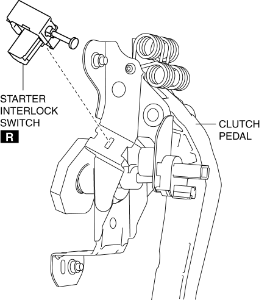

< Previous
Next >
2014 -
Mazda6 -
Transmission/Transaxle
STARTER INTERLOCK SWITCH REMOVAL/INSTALLATION [C66M-R]
1. Disconnect the negative battery cable. (See NEGATIVE BATTERY CABLE DISCONNECTION/CONNECTION [SKYACTIV-G 2.5].)
2. Disconnect the starter interlock switch connector.
3. Remove the starter interlock switch using the following procedure: a. Detach hook A in the direction of the arrow shown in the figure.

b. Slide the starter interlock switch in the direction of the arrow shown in the figure.
c. Remove the starter interlock switch from the clutch pedal.

4. Install the starter interlock switch using the following procedure: a. Insert hook B of a new starter interlock switch into the clutch pedal hole.
b. While pressing the starter interlock switch against the clutch pedal, slide the starter interlock switch until hook A is locked in the direction of the arrow shown in the figure.
5. Fully depress the clutch pedal in the direction of arrow, and verify that a click sound from the starter interlock switch is heard.
6. Connect the starter interlock switch connector.
7. Connect the negative battery cable. (See NEGATIVE BATTERY CABLE DISCONNECTION/CONNECTION [SKYACTIV-G 2.5].)
8. Fully depress the clutch pedal, and verify that the engine starts.
< Previous
Next >
© 2012 Mazda North American Operations, U.S.A.